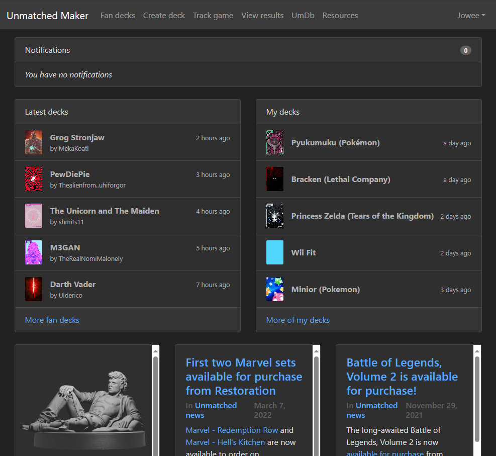
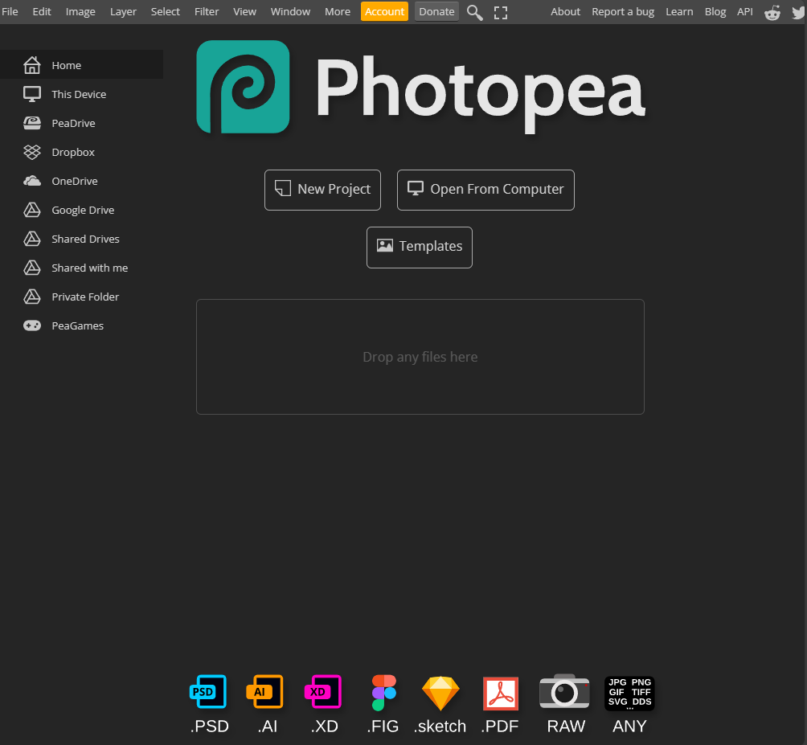
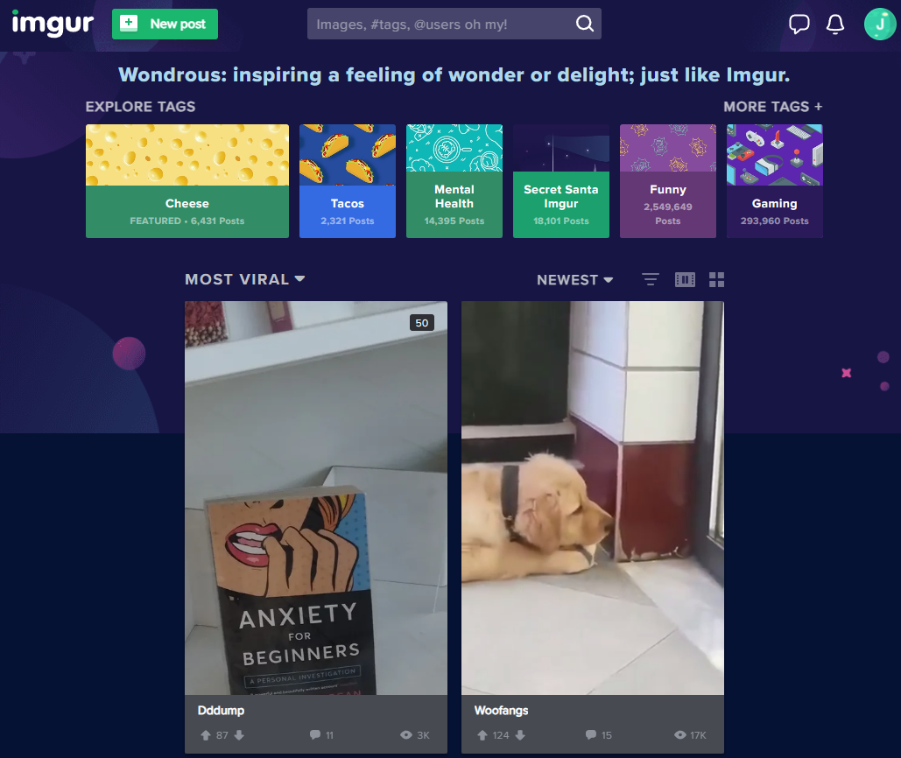

Visual Heirarchy
Unmatched Maker
Unmatched Maker Unmatched Maker uses visual heirarchy to present certain information stronger than others. This includes titles and such. As seen in the picture, each deck in the "latest decks" column has a bolded title, drawing the eye, and who made it just underneath, a little darker and smaller to make it not the main information.
Rule of Thirds
Photopea
Photopea Photopea is a simple website, where most of the websites contents are waiting for user interaction. In order to make getting to that point faster, Photopea uses the rule of thirds to make sure the user find their way in a simple fashion. As seen in the above picture, the placed all of less important information around the edges, and place all the things for getting started in the middle of the screen.
PARC: Repitition
Imgur
Imgur Imgur does a great job with repitition. When you first boot up the website, you are greeted with a lot of information, most of which is very similar. Imgur organizes the information into groups and shows it all to you in an organized yet repetitive manner. As an example: the tags at the top of the screen are all structured and layed out in a repetitive manner.